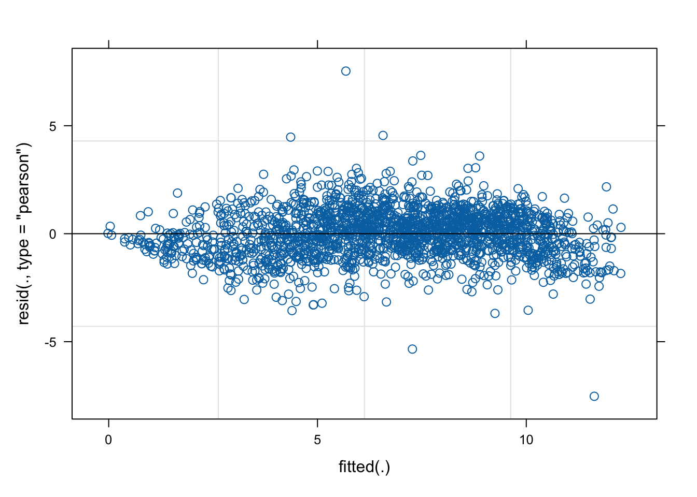

1.4 Repeated measurements
In many experiments there is interest in understanding how things change over time. It is natural that each experimental unit (patient, animal, specimen) is measured repeatedly over time. This leads to a repeated measurements structure. A random effects model can be used to recognise that each individual has their own (random) characteristics which they carry with them throughout the series of repeated measurements.
The plot below show the Clyde data on DO plotted against Station with each survey of the river on a particular date given a unique identifier. (Recall the Year is on a continuous scale with individual days identified by where they sit on a proportional scale.) Although this does not involve time, it still represents a repeated measurement structure.
path <- rp.datalink("DO_Clyde")
load(path)
clyde <- mutate(clyde, id = factor(Year), Station = factor(Station))
ggplot(clyde, aes(Station, DO, group = id, col = factor(id))) +
geom_line() + theme(legend.position="none")
A simple model uses the covariates identified in our earlier work with Station added as a factor and with a random effect for each survey of the river. Close inspection of the plot may give us some cause for concern as the residuals seem to be systematically low at very low and very high fitted values. We will explore more sophisticated models later. Nonetheless this simple provides a first assessment of the nature and size of the different effects at work.
library(lme4)
model <- lmer(DO ~ Year + Temperature + Salinity + Station + (1|id), data = clyde)
plot(model)
## Estimate Std. Error t value
## (Intercept) -1.984023e+02 34.427070403 -5.762973610
## Year 1.073006e-01 0.017359427 6.181113422
## Temperature -6.080901e-01 0.019789679 -30.727639400
## Salinity -6.403902e-02 0.009979926 -6.416782871
## Station2 -1.162670e-01 0.132708986 -0.876104804
## Station4 -1.005766e+00 0.134251053 -7.491677866
## Station6 -1.246029e+00 0.135887367 -9.169572462
## Station8 -1.634330e+00 0.138578921 -11.793499816
## Station10 -1.808147e+00 0.142454530 -12.692803140
## Station12 -1.917212e+00 0.149310252 -12.840460726
## Station14 -1.206095e+00 0.155097752 -7.776353773
## Station16 -7.994754e-01 0.173955255 -4.595867884
## Station18 -1.967655e-03 0.197033609 -0.009986393
## Station20 6.864268e-01 0.235454384 2.915328268
## Station22 1.465074e+00 0.288116720 5.085001178
## Station24 2.193303e+00 0.307531331 7.131965182Example: Leutinizing Hormone Levels in Cows
An experiment was carried out to compare the concentrations of leutinizing hormone (LH) in 16 suckled and 16 nonsuckled cows. Measurements were made daily from day 1 through to day 4 postpartum, and twice daily from day 5 through to day 10 postpartum. The cows were ovariectomised on day 5 postpartum.Source: Raz(1989), Biometrics 54, 851-71.
The data are available in the dataframeluthorin therpanelpackage.
The data are in ‘block’ form so we need to reorganise them into long vectors in order to make use of later modelling functions.
The gather function (in the tidyr package) handles the details for us. First we give the dataframe variables names and then we create an id variable so that we can keep track of which animal each measurement comes from. The key argument gives a name to the variable which will index the long vector of measurements and the value argument names the long vector. The remaining argument specifies the columns from which the long vector is made.
library(tidyverse)
names(luthor) <- c("gp", as.character(c(1:5, (5 + (1:10) / 2))))
luthor$id <- 1:nrow(luthor)
luthor.tidy <- gather(luthor, key = "times", value = "luthor", 2:16)
glimpse(luthor.tidy)## Rows: 480
## Columns: 4
## $ gp <dbl> 1, 1, 1, 1, 1, 1, 1, 1, 1, 1, 1, 1, 1, 1, 1, 1, 2, 2, 2, 2, 2, …
## $ id <int> 1, 2, 3, 4, 5, 6, 7, 8, 9, 10, 11, 12, 13, 14, 15, 16, 17, 18, …
## $ times <chr> "1", "1", "1", "1", "1", "1", "1", "1", "1", "1", "1", "1", "1"…
## $ luthor <dbl> 0.516, 0.367, 0.471, 0.450, 0.709, 0.273, 0.346, 0.261, 0.433, …A plot of the ‘repeated measurements’ over time immediately suggests that a transformation to the log scale might be helpful.
ggplot(luthor.tidy,
aes(times, luthor, group = id, col = factor(gp))) +
geom_line()
ggplot(luthor.tidy,
aes(times, log(luthor), group = id, col = factor(gp))) +
geom_line()It is also useful to plot summaries such as means and (2) standard errors to see the underlying patterns. We will move to the convenient function rp.rmplot from the rpanel package to do this. In the third plot below the shaded area has width two standard errors of the difference between the means at each time point. This helpfully highlights evidence for differences in the two mean trajectories, in an informal manner.
LH <- luthor[,2:16]
gp <- factor(luthor[,1])
times <- times <- c(1:5,(5+(1:10)/2))
rp.rmplot(log(LH), id = id, fac = gp, timept = times, type = "mean",
panel = FALSE)
rp.rmplot(log(LH), id = id, fac = gp, timept = times, type = "mean+bar",
panel = FALSE)
rp.rmplot(log(LH), id = id, fac = gp, timept = times, type = "band",
panel = FALSE)

For a proper analysis, a model is required. It is clear that we need a time effect and a group effect, and possibly an interaction. This can be written as \[ y_{ijk} = \mu + g_i + t_k + (gt)_{ik} + a_{ij} + \varepsilon_{ijk}, \] where \(i\) refers to group, \(j\) to animal within the group and \(k\) to time point. Notice the additional term \(a_{ij}\) which represents a `level shift’, above or below the mean, associated with animal \(j\) in group \(i\). This level shift appears for all the measurements over time for this animal. It is assumed to be a normal random variable with mean \(0\). The model parameter associated with this term is the standard deviation of this random level shift.
The advantage of this model is that it gives a more realistic description of how the data have been generated. In particular, it should make a better job of capturing the structure of the random variation present. That means that the standard errors of the group and time effects will be more realistic than a model which assumes all the variation is simply independent added noise.
Main effects and their interaction from the fitted model are shown in the summary below.
library(nlme)
model <- lme(log(luthor) ~ times * gp, random = ~ 1|id, data = luthor.tidy)
anova(model, type = "marginal")## numDF denDF F-value p-value
## (Intercept) 1 420 13.164260 0.0003
## times 14 420 3.484231 <.0001
## gp 1 30 0.164824 0.6876
## times:gp 14 420 1.516862 0.1014The interaction is not significant, suggesting that the evidence for the shape of the mean trajectories being different is not convincing. However, we have treated time as a factor, assuming no connection between the mean responses at each time point. Perhaps we should investigate a model which describes the evolution over time through a smooth, non-linear curve of some kind.